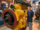
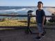
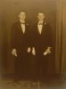
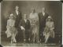
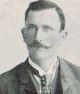
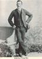
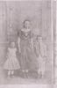
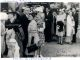

Photos
Matches 401 to 435 of 435
| # | Thumb | Description | Linked to |
|---|---|---|---|
| 401 | Tomoaki Igarashi Posing with tiled mural in Nimbin NSW - Oct 2020 | ||
| 402 | Tomoaki Igarashi Xmas 2020 | ||
| 403 | Tomoaki Igarashi Rottnest Island Jan 2020 | ||
| 404 |  | Tomoaki Igarashi Visiting the WA Shipwrecks Museum - Jan 2020 | |
| 405 | Tomoaki Igarashi Catching the Rottnest Island Roundtrip Fast Ferry from Hillarys Boat Harbour, Western Australia. Jan 2020 | ||
| 406 |  | Tomoaki Igarashi Feeling the fresh ocean breeze - Ballina, Oct 2020 | |
| 407 | Tomoaki Igarashi - 2018 Browsing shops in Nimbin, Oct 2020 | ||
| 408 | Tomoaki Igarashi - 2020 Richmond River Light - Ballina Head | ||
| 409 | Tomoaki Igarashi - 2020 Visiting Fremantle Western Australia, | ||
| 410 | Toru Igarashi | ||
| 411 | Toru Igarashi | ||
| 412 | Toru Igarashi | ||
| 413 | Toru Igarashi | ||
| 414 | Toru Igarashi Father and Daughter - 2010 | ||
| 415 | Toru Igarashi Father and Son - 2010 | ||
| 416 | Toru Igarashi - 2010 Toru with his children | ||
| 417 | Toru Igarashi - 2010 Igarashi / Kumada family group | ||
| 418 | Toru Igarashi - 2010 Toru and Krittaporn witht the children, Chiang Rai 2010 | ||
| 419 |  | Twin Brothers Hugh and Eric Donohoe | |
| 420 | Walter Eamer (jnr) b:20 Aug 1891 | ||
| 421 | Walter Eamer and Horse Train Taken Meekatharra c.1905 | ||
| 422 |  | Wedding Day .. Henry marries Jessie Marriage Henry C Willsea to Jessie Spencer 26 Dec 1929 Perth Western Australia | |
| 423 | Wedding Mavis Willows to Martin Fitzgerald | ||
| 424 | William Inglis head | ||
| 425 |  | William McBean and Dorothy Eamer Taken at their Victoria St. home, April 2008 | |
| 426 |  | William Snell | |
| 427 |  | Willian Snell Taken from Child of the Outback | |
| 428 |  | Willows Children Children of George Francis Willows and Lucy Wickham Alice 1864, Jesse 1862, Sarah 1856 | |
| 429 | WILLOWS Grocery Store - 95 Mundy St., Bendigo, Victoria Who are the subjects? Here is an attempt to identify them. By blowing up the photo it would appear that the woman second from the Left is clearly the oldest, by far, more than likely Eleanor, and on closer inspection it is not too hard to perceive that she is possibly pregnant. For the young lady on her right (who is clearly maturing) to be… | ||
| 430 |  | Willows Second Cousins Descendants of John Willows and Eleanor Spencer | |
| 431 |  | Willows sisters, Lucy and Caroline with Pamela Eileen Brownfield Wedding reception of Kenneth Stanley DaviesK and Josephine Marie Dwyer | |
| 432 |  | Willows, Eamer and Beer - Three Generations Taken on 20/12/1942, first birthday of Helen Beer being nursed by Grandma as mother stands behind | |
| 433 | Winifred Caroline Tate Marriage to Henley Darnell ... 13th June 1931 | ||
| 434 | Winifred Caroline Tate | ||
| 435 | Winifred Tate |